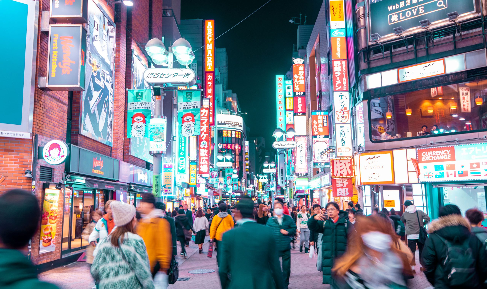
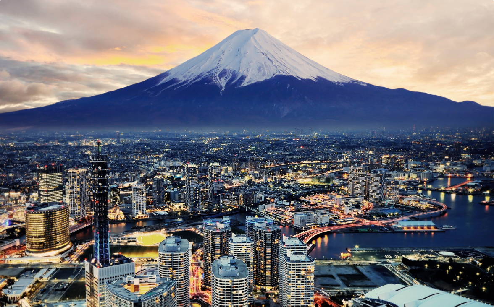

JAPAN - SHIBUYA

ชิบูย่า เป็นหนึ่งในเมืองที่มีชื่อเสียงอย่างมากในประเทศญี่ปุ่นโดยเฉพาะอย่างยิ่งการเป็นศูนย์กลางการค้าและการเงินที่สำคัญแห่งหนึ่ง
และที่สำคัญที่สุดคือความสวยงาม ของ 5 แยก ที่มีทางม้าลายที่สวยงามที่สุด และยังถือได้ว่าที่นี่เป็นสถานีรถไฟฟ้าที่มีผู้คนพลุกพล่าน
เป็นแห่งที่ 2 ของประเทศญี่ปุ่น
อ่านต่อ
JAPAN - FUJI

ภูเขา ไฟฟูจิ เป็นภูเขาที่สูงที่สุดในญี่ปุ่นด้วยความสูง 3,776 เมตร โดยเป็นผลจากการปะทุของภูเขาไฟเมื่อประมาณ 100,000 ปีที่แล้ว
ในปัจจุบัน ภูเขาไฟ ฟูจิและบริเวณโดยรอบเป็นพื้นที่นันทาการยอดนิยมสำหรับผู้ที่ต้องการปีนเขา ตั้งแคมป์ และพักผ่อน
นักท่องเที่ยวจากทั่วทุกมุมโลกต่างพากันมายังจังหวัดชิซุโอกะ และจังหวัดยามานาชิ
เพื่อชมภูเขาสูงใหญ่ที่น่าประทับใจอันเป็นหนึ่งในสัญลักษณ์ที่โดดเด่นที่สุดของประเทศ
อ่านต่อ